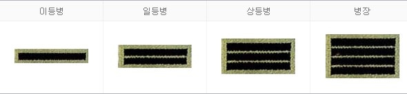
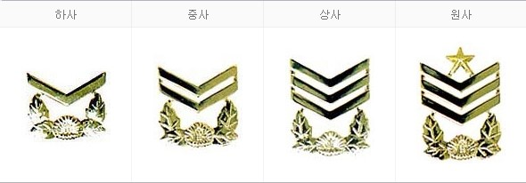
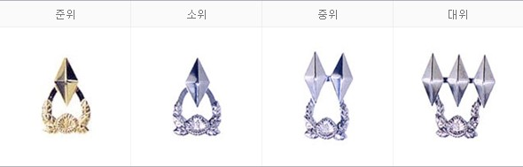
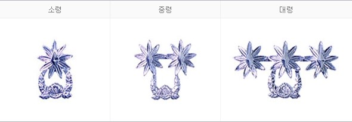
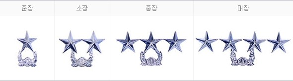

군대와 관련된 내용을 한눈에!
다음은 군대의 공통적인 계급이다.
병
병 계급장의 형태는 지구 구성요소인 4개의 층을 표시한 것. 군 기반 형성의 상징으로 계급이 오를수록 전투 능력 향상 및 임무수행의 숙달을 의미
부사관
굳건한 기초위에 자라나는 나뭇가지를 형상화 한 것으로 자라나는 나무처럼 전문화된 기술, 숙련된 전투력 개발능력의 축적을 나타냄
위관장교
위관장교의 마름모는 금강석(다이아몬드)을 상징하는 것으로 가장 단단하면서 깨어지지 않는 특성을 초급장교로서 국가 수호의 굳건한 의지로 표현
영관장교
영관의 대나무는 사계절 항상 푸르름과 굳건한 기상 그리고 절개를 상징
장군
장군의 별은 스스로 빛을 내는 천체로서 군에서의 모든 경륜을 익힌 완숙한 존재임을 상징하며 위관장교의 금강석은 지하를 영관장교는 지상을 장군의 별은 우주를 표현
대한민국 국군 중 지상을 담당하는 군사조직, 3군 중에 가장 큰 비중을 차지한다.
한국 육군의 기원은 임시정부의 광복군이다. 다른 한편에서는 남조선국방경비대와 미군정이 설립한 군사영어학교가 진정한 모태라고 주장하기도 한다.
대한민국 국군의 해군이다. 3군 중에 병력이 제일 적다. 구축함 12척, 호위함(프리깃) 13척을 보유 중이다.
연안방어용으로 초계함 13척, 고속함 18척, 참수리 고속정 40~50척도 보유했지만, 고속함을 제외한 대부분은 퇴역이 예정된 군함들이다.
항공 전력으로는 헬기와 해상 초계기, 각종 훈련기 등 78대의 항공기를 보유하고 있다. 해군의 상륙 능력은 해병대를 주축으로 강습상륙함 2척과 수송함 7척, 공중부양함 5척 등으로 1번 상륙에 여단급 정도의 제한적인 상륙능력이 있다.
대한민국 국군 중 공중을 담당하는 군사조직이다.
전투기, 전폭기, 정찰기, 수송기 등 항공기를 운용하는 비행단 및 비행전대와 방공무기를 운용하는 방공유도탄사령부 및 예하 방공유도탄부대, 영공을 감시 및 통제하는 방공관제부대, 각종 지원부대로 구성되어 있다.
한국 해군의 전략기동부대.
처음에는 철수한 일본군이 남기고 간 장비를 긁어모으고, 해군에서 차출한 약 400여 명(장교 26명, 부사관 84명, 병 300명) 정도의 병력밖에 없었다.
이후 꾸준한 확장을 통해 현재는 2개 사단과 2개 여단, 독립부대(연평부대)를 거느린 군단급 부대이며 병력은 대략 28,000명 정도다.